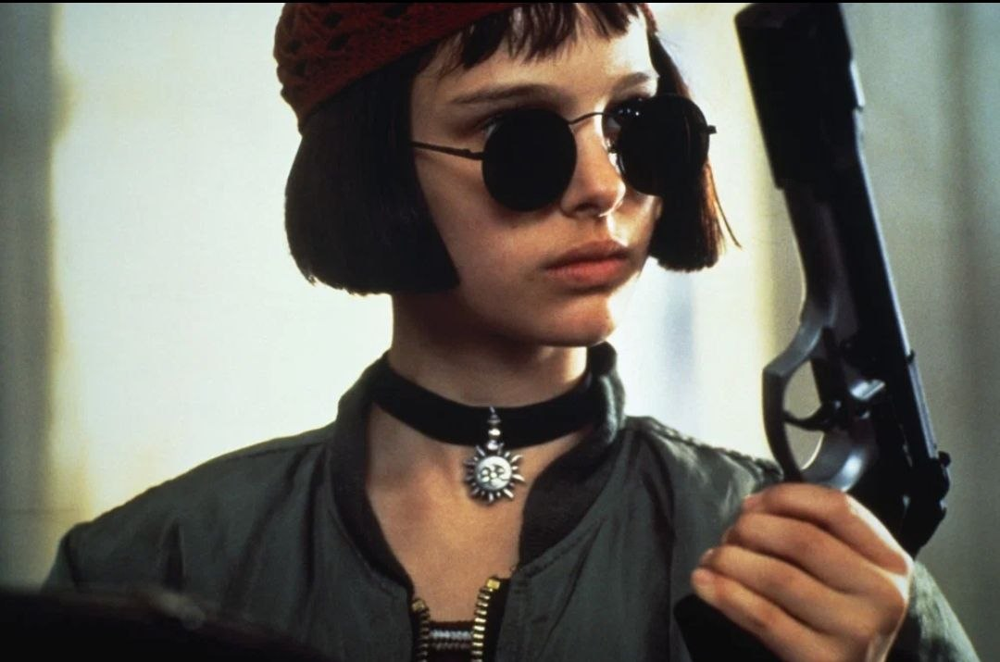
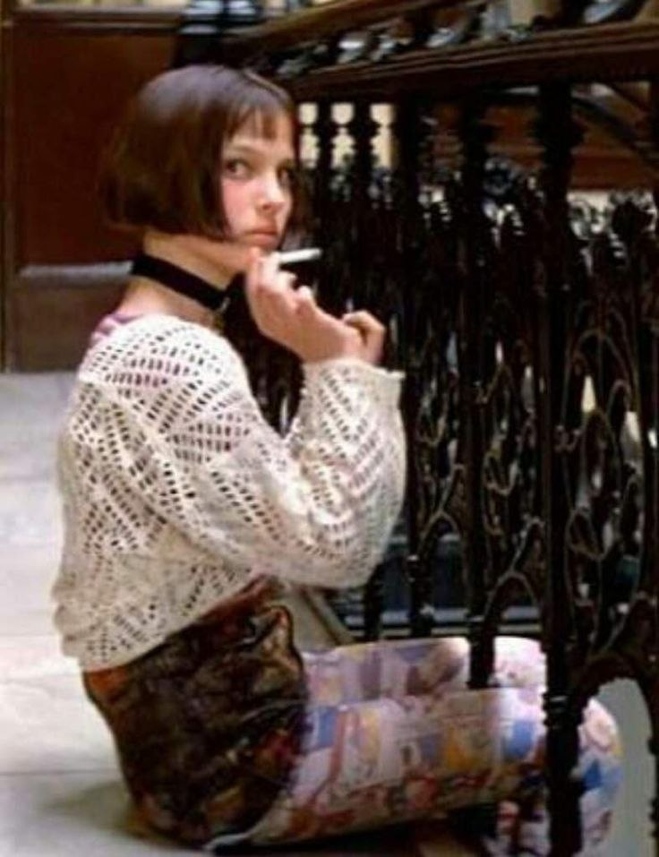
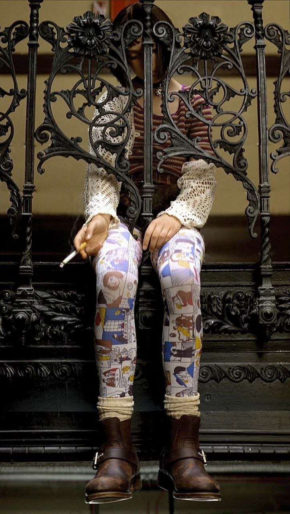
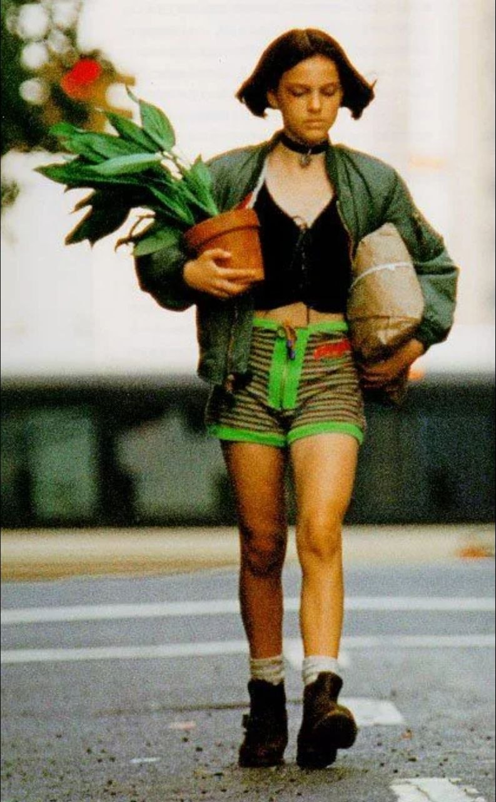
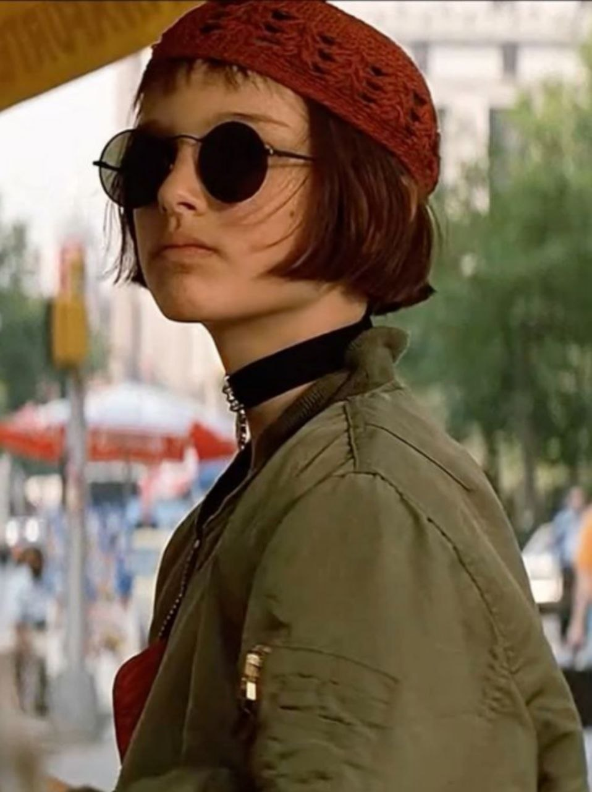
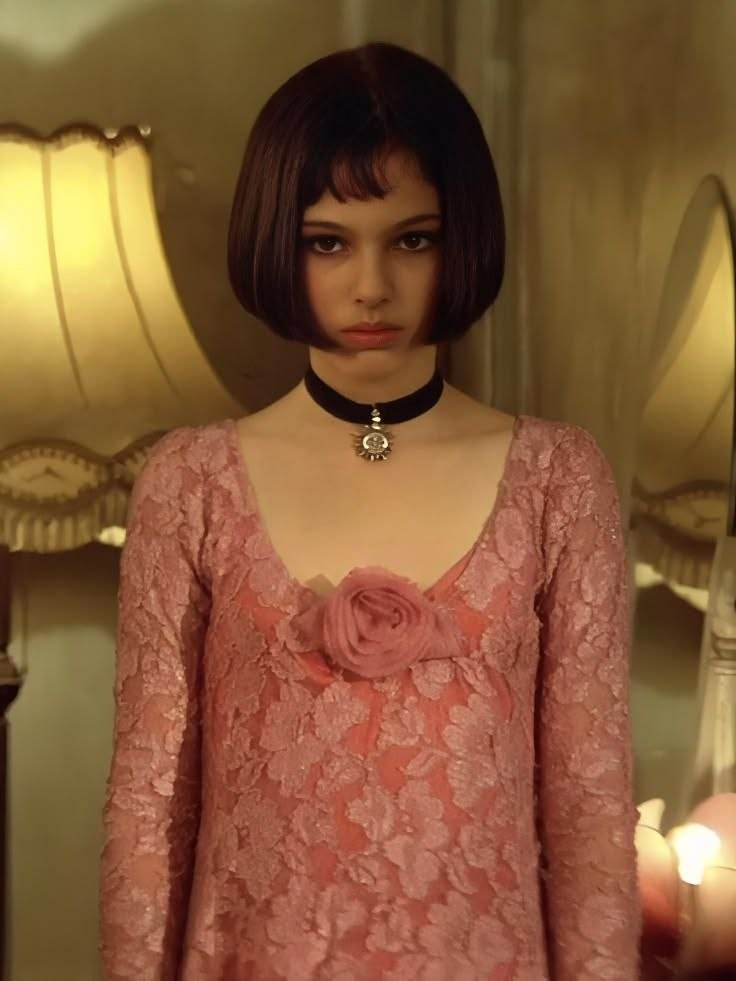

ЭТАП 1: Ребёнок из неблагополучной семьи
Матильда живёт с отчимом, мачехой и сводной сестрой, где её постоянно унижают и игнорируют. Единственной радостью для неё остаётся маленький младший брат. Она прогуливает школу, курит на лестничной клетке и отчаянно мечтает вырваться из этого домашнего ада.
Образ: Пёстрый кэжуал первой половины 90-х: цветные лосины, оверсайз-свитера крупной вязки, броская пластиковая бижутерия, кроп-топы и яркие банданы. Волосы небрежно собраны или просто распущены, макияж полностью отсутствует.


Внутреннее состояние: Тотальное одиночество, глубокая злость на весь окружающий мир и отчаянное, болезненное желание быть наконец замеченной. Она эпатирует своей внешностью окружающих просто потому, что не знает другого доступного способа привлечь к себе внимание.
ЭТАП 2: Ученица киллера
Вся семья Матильды жестоко убита грязными полицейскими. Девочка находит временное убежище у своего молчаливого соседа Леона, который оказывается профессиональным наёмным убийцей. Он учит её обращаться с оружием, а она взамен учит его читать. Постепенно Матильда начинает неосознанно копировать его повадки, привычки и стиль.


Образ: Главным визуальным символом становится легендарный зелёный оверсайз-бомбер (вещь из гардероба самого Леона, ставшая для неё осязаемой «бронёй»). К нему добавляются плотный чёрный чокер с подвеской, грубые тяжёлые ботинки, вязаная красная шапка и культовые кроп-топы в сочетании с короткими шортами. Ярких цветов становится заметно меньше — теперь доминируют тёмные и армейские оттенки.
Внутреннее состояние: Всепоглощающая жажда мести за смерть брата причудливо смешивается с хрупкой детской влюблённостью в своего спасителя. Матильда изо всех сил пытается казаться взрослой, сильной и абсолютно неуязвимой, но внутри всё ещё остаётся той самой испуганной маленькой девочкой. Чужой бомбер служит ей своеобразным защитным коконом.
Понравился material? Вы можете поддержать автора монеткой
Поддержать КиноГидЭТАП 3: Развязка и потеря
Леон трагически погибает, спасая Матильду от штурмующих здание полицейских. Она снова остаётся совершенно одна, но это уже далеко не та беспомощная, растерянная сирота из начала фильма. Она возвращается в исправительную школу-интернат, где первым же делом высаживает в открытую землю любимое комнатное растение Леона — символический и трогательный жест прощания.

Образ: В финальных кадрах она снова предстаёт в простой повседневной одежде (обычный скромный свитер, классические джинсы), но уже без прежней хаотичной пестроты. Чокер и бунтарский бомбер навсегда остаются в её бурном прошлом. Отдельно выделяется самый трогательный момент — кружевное розовое платье, которое незадолго до этого подарил ей Леон. Надев его, она на короткое мгновение снова становится просто беззаботным ребёнком.
Внутреннее состояние: Смирение, искреннее принятие невосполнимой потери и одновременно с этим — вынужденное, глубокое взросление. Она больше не одержима слепой местью, но и совершенно не боится своего неопределённого будущего. Её новый гардероб больше не кричит — он спокойно молчит. Вся её сила теперь сосредоточена внутри.